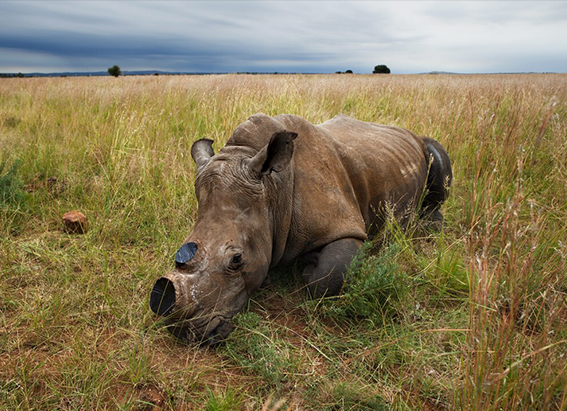
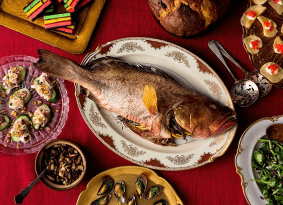
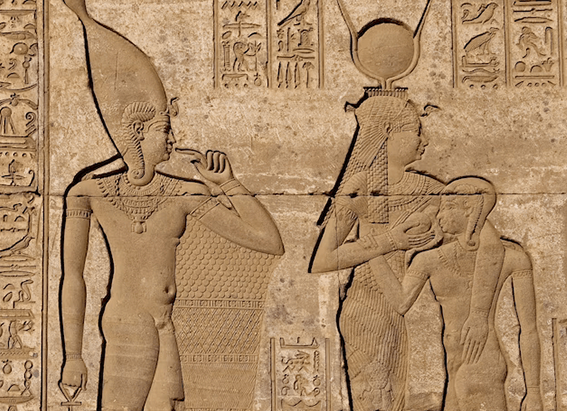

NATIONAL GEOGRAPHIC
Arapaima
ANIMAL
Also known as the paiche or the pirarucu, the arapaima is an air-breathing fish that plies the rainforest rivers of South America's Amazon Basin and nearby lakes and swamps. One of the world's largest freshwater fish species, these giants can grow up to 15 feet long and weigh up to 440 pounds, though fish that big have not been reported for many years. More commonly, they’re about six feet long and 200 pounds.
Arapaimas have tapered, copperish-green heads, upturned mouths, and scaly, streamlined bodies that are black with a white center. A dorsal fin stretches along their backs toward their massive tails, which are red. Their Brazilian name, pirarucu , comes from the Tupi language and translates roughly as “red fish.”
As obligate air breathers, arapaimas can only stay underwater for 10 to 20 minutes. They tend to stay near the water’s surface before coming up to breathe, using a modified swim bladder that opens into the fish’s mouth and acts as a lung. The noisy, distinctive gulp it makes sounds like a cough and can be heard from far away.
Diet
This South American giant uses a “gulper” feeding strategy: By opening its large mouth, the fish creates a vacuum that pulls in nearby food objects. Arapaimas survive mainly on fish, but they're also known to eat fruits, seeds, and insects.
Fierce predators, they can also use short bursts of speed to leap out of the water to grab birds, lizards, and even small primates from low-hanging trees.
Reproduction
Their movements and reproductive cycle are highly dependent on the Amazon’s seasonal floods. When the rivers overflow, fish are dispersed into floodplains containing so much decaying vegetation that oxygen levels are too low to support most fish. Then, during low-water months, arapaimas construct nests in sandy bottoms where the females lay eggs.
Adult males play an unusual reproductive role by incubating tens of thousands of eggs in their mouths, guarding them aggressively and moving them when necessary. The eggs begin to hatch as rising water levels provide them with flood conditions in which to flourish.
‘Cod of the Amazon’
Arapaima gigas was long believed to be the only species of arapaima, but in 2013 scientists proved that another species of the fish exists. Since then, further studies have shown that there may be five or more species of arapaimas.
Sometimes referred to as the “cod of the Amazon,” arapaimas are considered an excellent food fish and have provided an important source of protein in the Amazon for centuries. Local people often salt and dry the meat, which can be stored without rotting, important in a region with little refrigeration.
Their proximity to the water’s surface makes the arapaimas vulnerable to human predators, who can easily target them with harpoons and spears. Their numbers have declined dramatically throughout the region mainly because of overfishing. In recent years, new management practices involving local fishing communities in Brazil have boosted arapaima populations.
Arapaimas don’t just grow big, they also exhibit the fastest known growth rates in any fish. This makes the arapaima an ideal species for farming. Arapaimas have been introduced as an aquaculture species to other rivers in tropical South America It has also been introduced for sport fishing in Thailand and Malaysia.
Comments :
- john Very good
- john Very good
Leave a Reply
Your email address will not be published. Required fields are marked*
Related posts:
-
No one wanted to buy 2,000 rhinos up for auction. What happened next is good news.
About 2,000 white rhinos living on the world’s largest rhino farm will be released into the wild as part of a new deal struck between farm owner John Hume and the conservation nonprofit African Parks.
View article -
What is the Feast of the Seven Fishes
Christmastime can be a symphony of sensory delight: the sweetness of a candy cane, the smell of pine, the chime of bells, the glow of string lights and for some, the sizzle of fish in the kitchen.
View article -
Egyptians used papyrus and other ways of handling periods through the years
In ancient Egypt, people used softened papyrus, a grass-like plant, to absorb their menstrual blood sort of like an early tampon. The oldest historical record of period management, it’s also one of the few known
View article